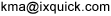

Sökmotorn Ixquick introducerar ny tjänst för att surfa anonymt
Gratis, innovativ proxytjänst erbjuder fullständigt integritetsskydd online
28 jan 2010Ixquick, sökmotorn med världens bästa anonymitetsskydd och dess amerikanska varumärke, Startpage.com, tillkännagav idag släppet av en ny proxytjänst som låter användare surfa på nätet med fullständig sekretess. Proxyn låter användare besöka webbsidor säkert och anonymt, utan att dela ut någon information som är privat eller möjliggör personlig identifiering till någon av sidorna de besöker.
Ixquick-proxyn är en gratistjänst som fungerar tillsammans med Ixquicks sökmotor, som finns tillgänglig på www.ixquick.com. När användare gör en sökning, kommer de se det klickbara alternativet ”proxy” under varje sökresultat. När man väljer det alternativet, agerar Ixquick som mellanhand för att hämta sidan och visa den i ett sekretesskyddat Ixquick-fönster.
Proxyn låter användaren surfa helt anonymt, eftersom användaren aldrig har direktkontakt med tredjepartssidan som besöks. Användarens IP-adress är osynlig för webbsidan som besöks. Dessutom kan sidan inte se eller lägga in cookies i användarens webbrowser.
Proxytjänsten täcks av samma integritetspolicy som har gjort Ixquick till industriledande inom anonyma söktjänster. Ixquick sparar inte IP-adresser, användares sökresultat eller detaljer om proxyanvändning. Företagets praxis för datalagring är tredjepartscertifierad med ”European Privacy seal” och är allmänt ansedd som den bästa inom industrin.
Proxytjänsten lanseras idag, 28:e januari, för att fira den internationella Integritetsskyddsdagen (Data Privacy Day).
”Folk bryr sig mer om policies för datalagring online nu än någonsin tidigare,” sade VD Robert Beens. ”Vi ville ge dem ett användbart verktyg och den här proxyn är nästa logiska steg i utbyggnaden av våra tjänster. En sökmotor är stället du börjar när du ska besöka andra sidor. Nu kan våra användare ta sekretessen de får med Ixquick till nästa nivå och besöka sidorna de hittat anonymt också. Den här proxyn kompletterar bilden av en fullständigt anonym söktjänst.”
Information om Ixquicks nya proxytjänst, tillsammans med en video som förklarar tjänsten, gjord av Ixquicks talesperson i USA, integritetsexperten dr. Katherine Albrecht, finns på sidan ”Det här gör Ixquicks proxyserver": https://ixquick.com/proxy/sve/help.html
Videon finns också tillgänglig direkt på: Titta på Proxy video
För att pröva Ixquicks proxytjänst, gör en sökning på:
https://www.ixquick.com, och klicka sedan på alternativet ”proxy” under sökresultatet.
Om Ixquick
Ixquick är en prisbelönt sökmotor med en industriledande sekretesspolicy. Ixquick grundades i New York 1998 och är den enda stora sökmotorn som tillhandahåller en söktjänst som är helt anonym, då den inte sparar någon privat eller personlig information om sina användare. Det är också den första och enda sökmotorn som erbjuder SSL-kryptering för att förhindra avlyssning av data som skickas. Mer information om Ixquick, inklusive information om företagets exemplariska praxis för datahantering, kan hittas på www.ixquick.com.
I USA är Ixquick känt som Startpage.com.
För pressfrågor, kontakta:
Alex van Eesteren
Business Development och Media Relations
+31-30-6971778

eller
Dr. Katherine Albrecht
U.S. Marketing och Media Relations
877-434-3100 [gratis inom USA]
+1 973-273-2125 [internationellt]
